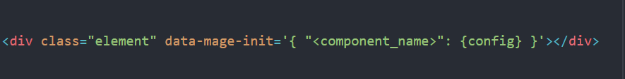
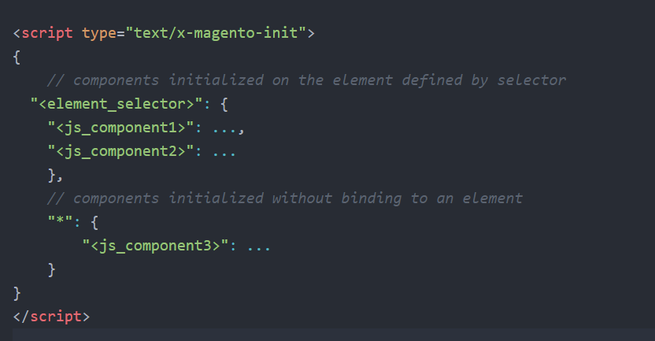
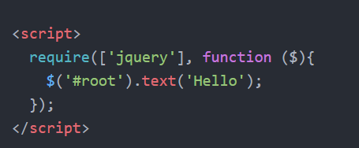

RequireJS is a loader which is used to load Javascript files and manage dependencies between Javascript files. It is modular so you can have as many small files as you want that serve different purposes without worrying about dependencies or loading order among script tags. Also the optimization tool allows you to create build files that only load a certain part of the app at startup and then seperate build files for other parts of the app that can be loaded on demand.
RequireJS is a JavaScript module loader that works in the Browser
-Ok.. why should I use it?
A Magento 2.3.0 installation with the Blank Theme loads 161 JS files in an empty home page
In Magento 2, each module can have its own RequireJS config that can be placed with the name "requirejs-config.js" in the path Vendor/Module/view/frontend/
Magento 2 uses paths for the sake of modularity.
Paths is just used to "map" the path to your resourse but with Map you can have several versions of your resource that can be loaded from a different path.
For example you could have file1 to load in desktop browser and file2 which is a modified version for a mobile browser
Plain code inside script tags in Magento 2 does not work, so how you initialize Javascript?
From M2 docs
Using the declarative notation to insert a JS component prepares all the configuration on the backend and outputs it to page source using standard tools. Use declarative notation if your JavaScript component requires initialization.
In Magento 2, you have two options for specifying declarative notation:
Use the "data-mage-init" attribute to insert a JS component in a specified HTML element.
To call a JS component on an HTML element without direct access to the element or with no relation to a certain element, use the script type="text/x-magento-init" tag and attribute syntax shown in the following example.
From M2 docs
Use imperative notation in the PHTML template to include raw JavaScript code on the pages to execute specified business logic. This method uses the "script" tag without the type="text/x-magento-init" attribute as shown in the following example:
